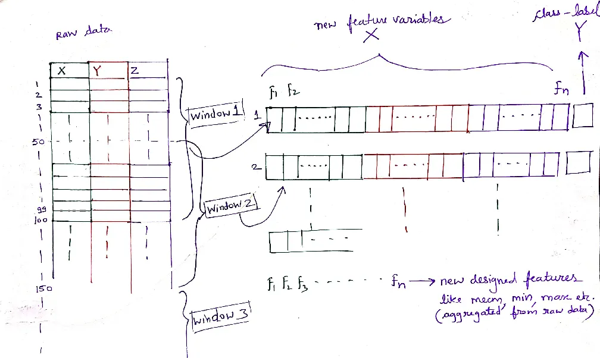

Human Activity Recognition
Table of Contents
- Chapter 3: Activity Recognition using Inertial Sensors [Slides]
- Implementing feature extraction in Python
- Notebook: Step Counting with Find Peaks [html] [ipynb]
Chapter 3: Activity Recognition using Inertial Sensors [Slides]
Let’s turn to a concrete example to illustrate how activity recognition can work. Consider the case where we want to identify whether a person is sitting, standing, jogging, walking upstairs, walking downstairs or driving a car. Our hypothesis is that each of these activities involves a different “signature” that can help detect the current state of the user. But this process is very different from the methods that you used so far to detect steps.
Detection: Counting Steps
Recall your first assignment: detecting steps. At the heart of the step counter algorithm is the detection paradigm. Here, the primary objective is to identify and quantify singular, temporally-constrained events from a continuous stream of data. In our step counting exercise, each step was represented as a peak in the accelerometer data. Using Python’s find_peaks, you designed algorithms to pick out these individual events, identifying the rhythmic up-down motion of walking.
In this detection-based approach, the emphasis is on the temporal accuracy of detecting singular, repetitive events. However, this approach focuses on micro-scale details and might not be optimal for understanding broader behaviors or activities.
Classification: Recognizing Activities
Now, think of activities as broader categories: walking, jogging, sitting, standing, etc. Unlike steps, these are not singular events but span over durations, often encompassing various movements and patterns. Recognizing such activities isn’t about finding a single peak but capturing the holistic ‘signature’ of a movement over time.
For activity recognition, instead of analyzing each data point in isolation, we use a “rolling window” approach. This means we capture chunks (windows) of continuous data, extracting meaningful features from them, and then associating them with a specific activity label. This window can either overlap with the previous one, ensuring continuity, or be distinct, depending on our application requirements. By comparing it with the simple step detection, you can see that activity recognition deals with longer timescales.
But why the rolling window? Let’s think of a classroom analogy. Instead of assessing a student based on one answer, imagine if we evaluate their performance over a series of questions. This gives a more comprehensive view of their capabilities. Similarly, by analyzing chunks of data rather than individual data points, we can understand broader patterns and behaviors. This is shown in the figure below - the table of 3-axis accelerometer data is aggregated into windows of data (100 samples in the figure). Two cases are illustrated - in the above case, each rolling window shifts by half the window size and in the below case, there is no overlap. Both are used in practice.
Whether overlapping or distinct, each window represents a ‘snapshot’ of movement, which is then transformed into a set of features (we will discuss what these features are in just a bit but for now lets focus on the concept). This is a crucial distinction from the step counting, where we were only interested in specific, singular peaks.
Two points to note regarding use of rolling windows:
- At a procedural level, the rolling window in classification is similar to rolling windows that we used for smoothing but with the crucial difference that we shifted by one sample in the smoothing case, whereas we shift by a full window or half window in this case. This is because the goal is different - in smoothing, we want to keep the same data length but just smooth the data whereas here, we want to aggregate data into say chunks over a longer window to determine what activity is occurring.
- The window size should be selected such that it is long enough to recognize the activity of interest. For example, if the goal is to recognize walking up the stairs, then an appropriate window may be a few seconds. Neither very short windows (e.g. one second) nor very long windows (e.g. 10 minutes) would be appropriate since there would be either too little information (former case) or the activity of interest may be mixed with other activities making it difficult to recognize (latter case).
From Raw Data to Activity Labels

With the conceptual groundwork laid, let’s understand the process of building an efficient activity recognition system. Here’s a comprehensive breakdown of each stage:
- Data Collection: The first and probably most important step of any activity recognition system is collecting high quality labeled data across many individuals, many different real-world conditions with different noise characteristics. Before diving into classification, it’s imperative to gather labeled datasets for each targeted activity. This typically involves participants or volunteers engaging in predefined activities while a recording device, often a smartphone or wearable, logs the sensor data. When generating labeled data:
- Ensure a balanced dataset across all activity categories.
- Encourage participants to carry devices in various orientations to ensure orientation-agnostic algorithms.
- Gather sufficient longitudinal data per activity so you can break it down into windows.
-
Feature Extraction: The raw sensor data, while information-rich, isn’t immediately fit for classification. One needs to extract the features, the identifiable patterns, and characteristics before using the data for classification models. Here, rolling windows segment the data, with each segment undergoing feature extraction.
- Time-domain Features: Simple statistical measures such as mean, median, variance, and standard deviation can capture essential characteristics of the data.
- Frequency-domain Features: Techniques like Fourier Transforms convert time-domain signals into their frequency components, enabling recognition of repetitive patterns, which are crucial in activities like walking or running.
- Similarity-based Features: Methods like Dynamic Time Warping (DTW) can help in understanding the similarity between two temporal sequences, useful in matching activity patterns.
- Others: Depending on the application, features capturing peak values, zero-crossings, or wavelet-based characteristics might also be of interest.
- Model Training: Having extracted a plethora of features, the next step is model training, where algorithms learn the mapping between these features and the corresponding activity labels. There are many machine learning algorithms but we will look at a few simpler ones in this class.
- Decision Trees (DT): Simple yet effective, DTs can classify data based on certain decision rules.
- Random Forests (RF): An ensemble of DTs, RFs offer improved accuracy and robustness.
- Prediction: The trained model can now be downloaded to a smartphone or smartwatch for performing real-time predictions. For example, think of your smartphone or smartwatch telling you you’ve been sitting too long or congratulating you on that intense running session. These devices, equipped with inertial sensors, can leverage the classification models that you have trained to offer these insights in real-time, enhancing user experience and promoting healthy behaviors.
Summing Up
To wrap it up, while both step counting and activity classification revolve around understanding human movement, they cater to different scales of analysis. Step counting is about detecting individual events, while activity classification seeks to recognize broader patterns over longer timescales. As we transition from counting steps to recognizing activities, we move from a micro-scale, detection-based paradigm to a macro-scale, classification-based paradigm, better suited for understanding the intricate tapestry of human behavior.
Implementing feature extraction in Python
Lets look at how you can split the data into windows of appropriate size and extract features from that window of data in python.
The resample function
A python function that is particularly useful for converting raw data into a feature vector is the resample function. Lets take the case of accelerometer data with three orthogonal axes: X, Y, and Z.
import pandas as pd
# Assuming your data frame 'df' has a DateTime index and columns 'x', 'y', and 'z' for accelerometer readings.
resampled_data = pd.DataFrame()
for t, w in df.resample('100L'):
frame = {}
frame['time'] = t
frame['x_mean'] = w['x'].mean()
frame['y_mean'] = w['y'].mean()
frame['z_mean'] = w['z'].mean()
frame['x_std'] = w['x'].std()
frame['y_std'] = w['y'].std()
frame['z_std'] = w['z'].std()
resampled_data = resampled_data.append(frame, ignore_index=True)
In this code:
- We resample the raw accelerometer data at 100 milliseconds intervals (‘100L’).
- For each window, we compute the mean and standard deviation for the X, Y, and Z accelerometer readings.
- We create a dictionary (frame) for each window, populate it with the computed features and the time stamp (t), and then append it to a new DataFrame (resampled_data).
After executing this code, resampled_data will hold the resampled accelerometer data with features calculated for each window. Using a dictionary like this streamlines the process of iterative feature engineering and DataFrame population. The append method of pandas DataFrame can easily ingest dictionaries, where each key becomes a column in the DataFrame, and the corresponding value becomes the row entry for that column.
Notebook: Step Counting with Find Peaks [html] [ipynb]
This notebook shows a step counter using resample and applies it to a synthetic temperature data trace. The initial temperature signal is generated at 10Hz over 2 weeks. The notebook shows how this can be resampled into hourly and daily intervals and a few features extracted for each window.